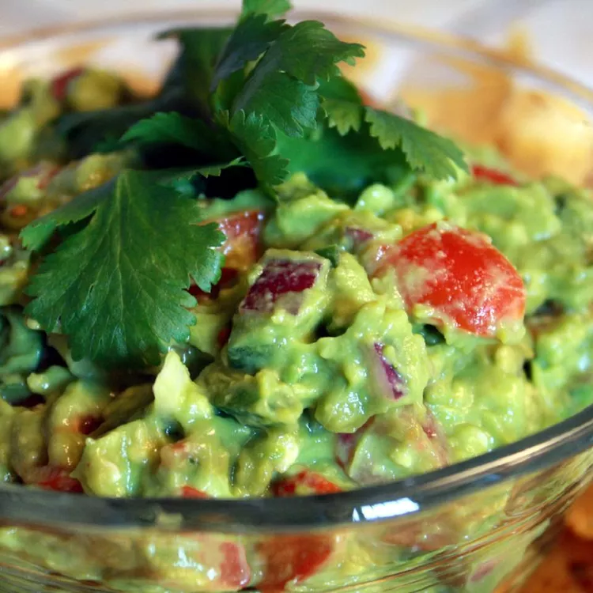

Guacamole

Description
This homemade guacamole recipe is simple and always the first to get eaten at our barbecues. It's perfect to serve
with tortilla chips or as a topping for tacos. To prevent browning, leave an avocado seed in the guacamole until ready
to serve.
Ingredients
- 2 medium avocados - peeled, pitted and diced
- 1 1/2 teaspoons salt, or to taste
- 1 large tomato, diced
- 1 medium onion
- 2 medium jalepeño peppers, chopped
- 2 tablespoons fresh lime juice
- 1/2 tablespoon chopped fresh cilantro
Steps
- Mash avocados in a medium bowl until desired consistency is reached. Stir in salt. Mix in tomato, onion, jalapeño
peppers, lime juice, and cilantro until combined.
- Cover and chill in the refrigerator for at least 30 minutes before serving.